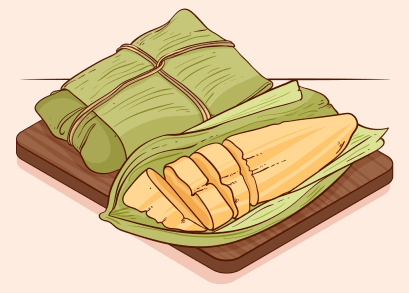

Ingredientes
- 1 espiga de milho
- 1 colher de sopa de açúcar
- 1 colher de sopa de manteiga
- Sal a gosto
- Palha de milho (para embrulhar)
Modo de preparo
- Descasque a espiga de milho e corte os grãos.
- Bata o milho, açúcar, manteiga e sal no liquidificador.
- Coloque a massa nas palhas de milho e feche bem.
- Cozinhe em água fervente por cerca de 40 minutos.
- Deixe esfriar e sirva.